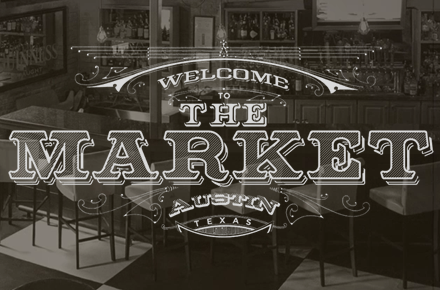
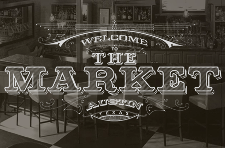

Adobe Muse
Upcoming Live Events
Muse Jam: Recreate a Website with Muse in 60 Minutes or Less
Have an existing site built with a traditional coding app that you'd like to recreate in Muse? How about a template from a CMS provider like Wordpress, Joomla or Business Catalyst? In this session we'll show you how you can quickly re-create a live website by extracting graphic elements, inspecting typographic styles, and building them out in Adobe Muse -- all in 60 minutes or less. After the presentation we'll open the floor to any questions you might with the application.
Muse Jam: Design for Mobile Devices with Adobe Muse
PLEASE NOTE: Session begins 1 hour later to accommodate the HOW DesignCast.
Join Adobe Muse Principal Product Manager Dani Beaumont as she shows you how to create tablet and smartphone versions of your desktop site so you can deliver engaging, relevant experiences whether the site is viewed on a large monitor while sitting at a desk, or on a small screen while on-the-go.
Past Recordings
‹
Muse Jam: Forms Explored
Adobe Muse includes contact forms that can be completely configured and styled to match your overall Muse design, and works on any third-party hosting service with PHP capabilities. In this Muse Jam session, join Dani Beaumont as she shares tips and tricks for building out a variety of forms options including the newly released check box and reCAPTCHA features. After the presentation we'll open the floor to any questions you might with the application.
Muse Jam: Bullets and Lists, oh My!
In this Muse Jam session, join Dani Beaumont as she gives you in-depth instruction on how to use the new Bullets, Bullet Styles, and Glyphs panels to create customized bulleted and numbered lists. Choose from a variety of bullet styles, characters, and icons. Access full character sets, such as punctuation and math symbols. And fine tune line height and spacing using typographical controls. After the presentation we'll open the floor to any questions you might with the application.
Muse Jam: Working with Self-Hosted Web Fonts
Join Dani Beaumont, Adobe Muse Principal Product Manager, as she shows you how easy it is to add your own self-hosted web fonts to your Adobe Muse design from font foundries like Fonts.com and services like Font Squirrel. Once added the typeface will appear in the Adobe Muse font menu and can be used while designing. When previewing or publishing the web font will be included as part of the exported Adobe Muse site that is uploaded to the hosting provider of your choice.
Muse Jam: What’s New in Adobe Muse CC
Join Dani Beaumont, Adobe Muse Principal Product Manager, as she gives you a sneak peek at Adobe Muse features and improvements released this week including self-hosted web font support; the new Bullets, Bullet styles, and Glyphs panels; reCAPTCHA spam protection to keep contact forms free of automated spam, support for right-to-left languages such as Hebrew and Arabic, plus additional enhancements and ongoing code improvements.
Muse Jam: Application Interface Deep Dive
Join Dani Beaumont, Adobe Muse Principal Product Manager, for an in-depth tour of the new user interface in Adobe Muse. In this session, you’ll see how to select a dark or light interface, how to set side-by-side windows, how to use organize panels like the new color picker, and more. After the presentation we'll open the floor to any questions you might have with the application.
Muse Jam: In-Browser Editing Updates
Join Dani Beaumont, Adobe Muse Principal Product Manager, and say goodbye to spending time updating your published websites. In this session, you’ll learn how to allow site owners to make minor updates to their live sites in a web browser, whether hosted by Adobe or another provider. Then, choose whether to sync the updates with your original Adobe Muse files. After the presentation we'll open the floor to any questions you might have with the application.
Muse Jam: Leveraging the Library Panel and Adobe Add-ons
The Library Panel in Adobe Muse lets you organize, reuse, and share design elements easily. Couple this with the Adobe Add-ons marketplace for sharing your collection with the community or downloading what others share and you have an incredibly useful productivity tool. Join Muse Product Manager Dani Beaumont as she takes you through the new feature implementation. After the presentation we'll open the floor to any questions you might have about the application.
Muse Jam: What’s New in Adobe Muse CC
Join Dani Beaumont, Adobe Muse Principal Product Manager, as she takes you through what’s new in Adobe Muse CC. Tour the updated workspace including dark UI, un-dockable panels and side-by-side design windows; use In-Browser editing with your hosting provider; download starter files, new widgets and other design elements; ensure your sites look sharp on HiDPI displays, and more. After the presentation we'll open the floor to any questions you might have about the application.
Muse Jam: How Did You Do That
This week let's take a look at how some amazing Adobe Muse designers have gone about building beautiful, highly interactive web sites. In this session we'll review some of the recent submissions to Muse Site of the Day and the Muse Widget Gallery. After that we'll open the floor up for any questions you might have with the tool.
Muse Jam: Embedding and Styling a Tumblr Blog
This week's Jam Session will focus on styling and embedding a Tumblr blog. Tumblr is a free service that is very easy for web site owners to interact with, and with a few pointers we can show you how to style the blog with the same fonts, colors and layouts as you're using in your Muse design. And if all goes well we'll give you a quick look at a Muse widget under development with one of our add-on partners to automate the process.
Muse Jam: Search Engine Optimization
Join Principal Product Manager Dani Beaumont of the Adobe Muse team as she explores ways within the Muse application to build search engine optimized sites by way of metadata, keywords, H1 definitions, and sitemap generation. After the presentation we'll open the floor to any questions you might with the application.
Muse Jam: Building Click-Through Prototypes
In past Muse sessions we’ve described the importance of building out wireframe designs to determine site navigation and content placement. Let’s take things a bit further and understand how powerful Muse can be as prototyping tool when validating flow, interaction and animation. We’ll start with a series of paper sketches and will build out a robust click-through mockup.


 
